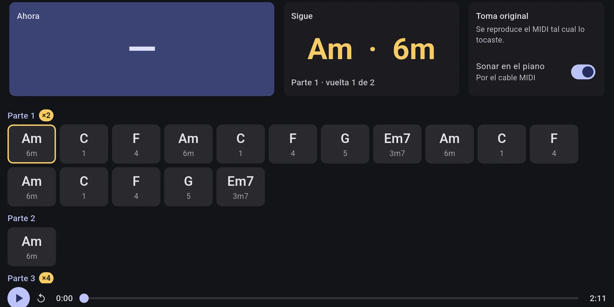
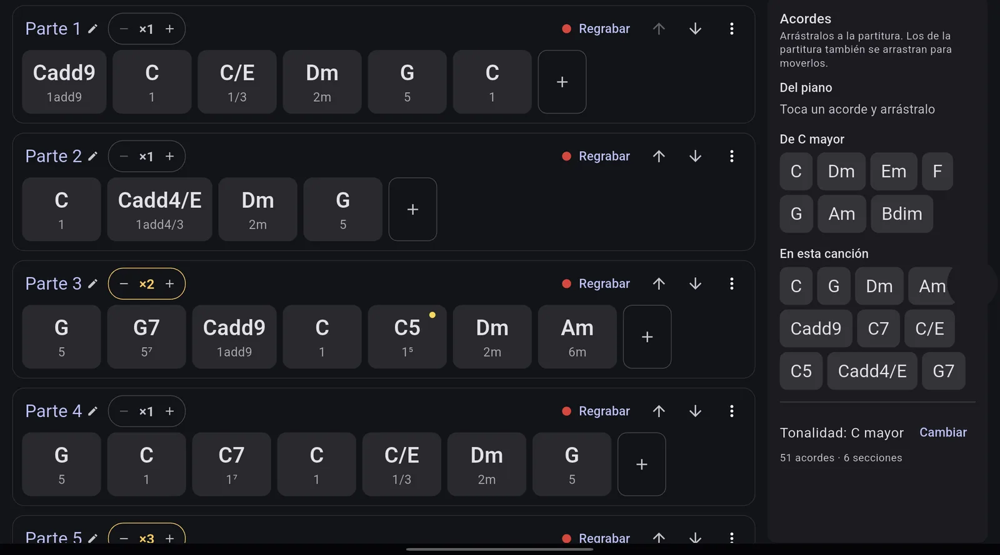
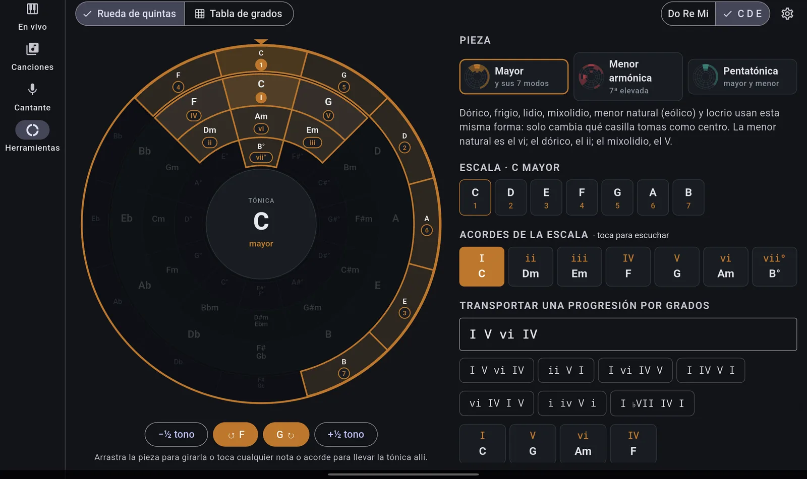

Tablet y teléfono
Android 7 o superior
- Abre el APK en la tablet. Si lo pide, permite instalar apps desconocidas.
- Conecta el teclado por USB (adaptador OTG o hub).
Para músicos que tocan en vivo
Scale escucha tu teclado por USB, reconoce los acordes y la tonalidad mientras tocas y guarda tus canciones por secciones para ensayarlas, transportarlas y tocarlas en vivo.
Android 7 o superior
Windows 10 y 11 (64 bits)
Versión 0.2.0 · Notas y versiones anteriores

Funciones
Pensada para tocar en vivo y ensayar: acordes, tonalidad, secciones y tus canciones en un solo lugar.
Reconoce el acorde que tocas, su grado y la tonalidad, con la relativa, alternativas y modulaciones.
Toca la canción y queda guardada por partes (×2, ×4…), con notas por sección que aparecen al tocar.
Arrastra acordes, escribe secciones como texto (G D/F# Em7'' C x2) o regrábalas con el piano. Todo se deshace.
Te sigue mientras tocas, detecta saltos entre partes y, si algo no cuadra, lo corriges con un toque.
Escucha la voz por el micrófono, grafica la nota en tiempo real y dice cuánto transportar la canción.
Rueda de quintas con escalas y modos, tabla de grados y transporte de progresiones como I V vi IV.

Cada sección es una vuelta: lo que cambias se aplica a todas sus repeticiones. Mueve acordes entre secciones o toma uno del piano y suéltalo donde va.

Gira la pieza para cambiar de tónica y mira la escala y sus acordes. Los acordes suenan en tu piano al tocarlos.
Requisitos
Cualquier teclado o piano con puerto USB MIDI ("USB to Host"), como los Yamaha PSR.
Tablet o teléfono con Android 7+, o un PC con Windows 10/11 de 64 bits.
Para traer canciones desde fotos o texto, tu propia API key de Anthropic, guardada solo en tu equipo.